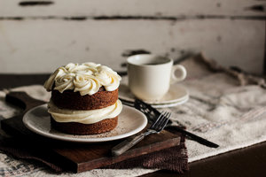

Black Tea Cake with Honey Buttercream

A cup of tea turned into a slice of cake
For the Black Tea Cake
- 1 cup (235 ml) milk
- 3 tablespoons black tea (or the contents of 3 tea bags)
- 1/4 cup (55 grams) butter, room temperature
- 1 cup (225 grams) granulated sugar
- 2 large eggs
- 1/4 cup vegetable oil
- 1 teaspoon vanilla extract
- 1 3/4 cups (175 grams) cake flour
- 1 1/2 teaspoons baking powder
- 1/2 teaspoon baking soda
- 1/2 teaspoon salt
For the Honey Butter Cream
- 1/2 cup (110 grams) butter, room temperature
- 3 tablespoons honey
- 2 cups (250 grams) powdered sugar
- Pinch of salt
Steps for the Black Tea Cake
- Preheat oven to 350 degrees F (180 degrees C). Grease a 9-inch round cake pan.
- Warm the milk until near boiling on the stove or in the microwave. Cut open the tea bags and add the tea directly into the milk. Allow to cool.
- In a large mixing bowl, cream together the butter and sugar until light and fluffy. Add the eggs one at a time, beating well after each addition. Beat in the vegetable oil and vanilla extract. Gradually add in the cake flour, baking powder, baking soda, and salt. Stir in the tea brewed milk, mixing until batter is uniform and smooth.
- Transfer batter to prepared pan and bake for 30-40 minutes (18-22 minutes for cupcakes), or until a toothpick inserted into the center comes out clean. Remove from the oven and allow to cool before frosting or serving.
Steps for the Butter Honey Cream
- In a large mixing bowl, beat the butter and honey until smooth. Add the powdered sugar and salt and continue mixing until the frosting comes together. If the frosting is too runny, add more powdered sugar until it reaches the right consistency.
- Likewise, if the frosting is too stiff, add more honey (or a splash of milk) to thin it out. If the frosting is too sweet, add a pinch more salt until the desired sweetness is achieved.
- Spread or pipe the honey buttercream onto the cooled cake and serve.